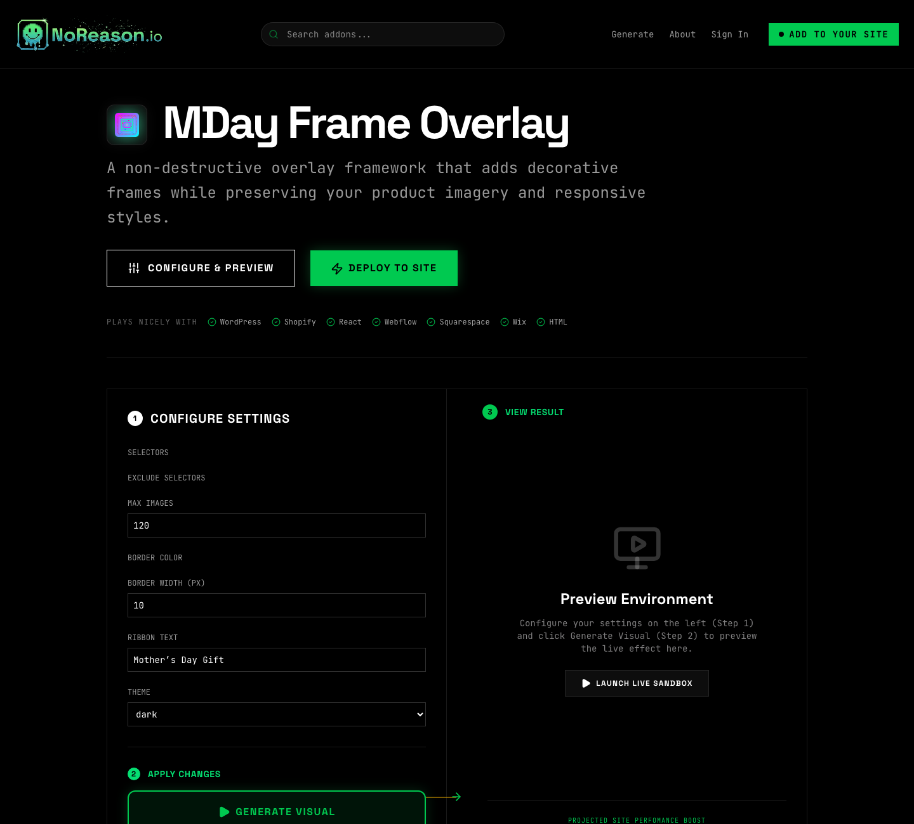
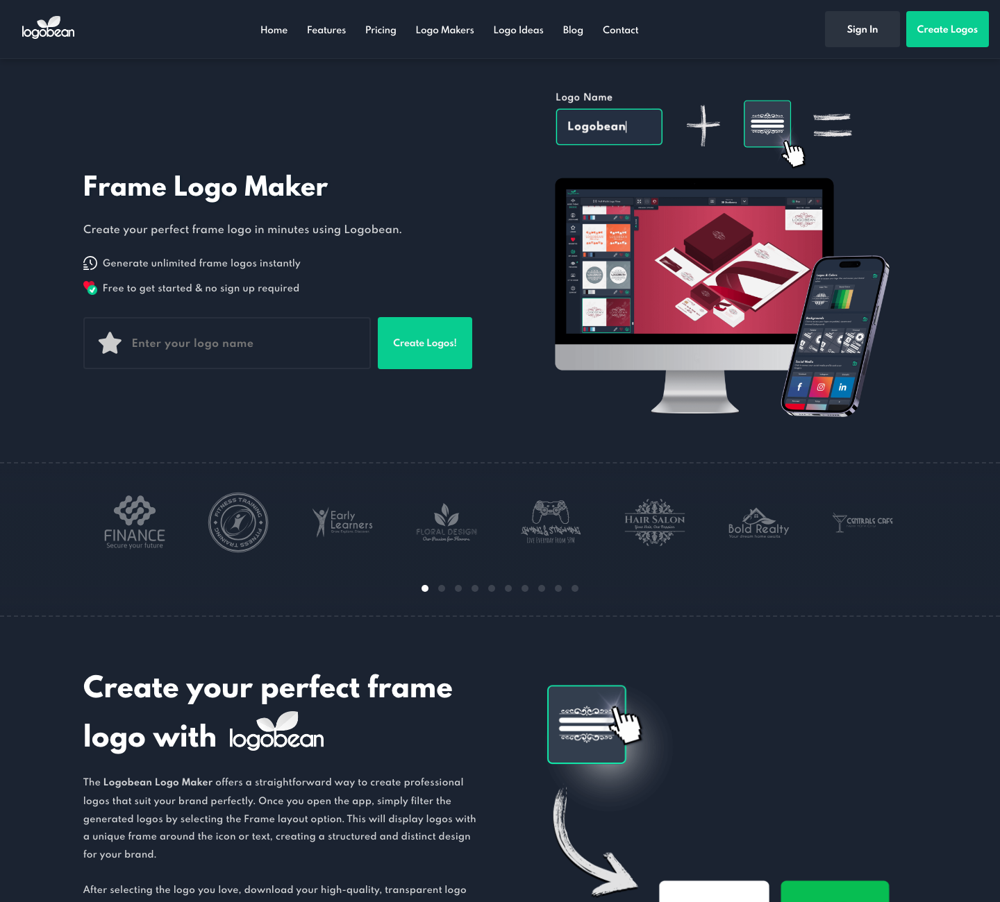
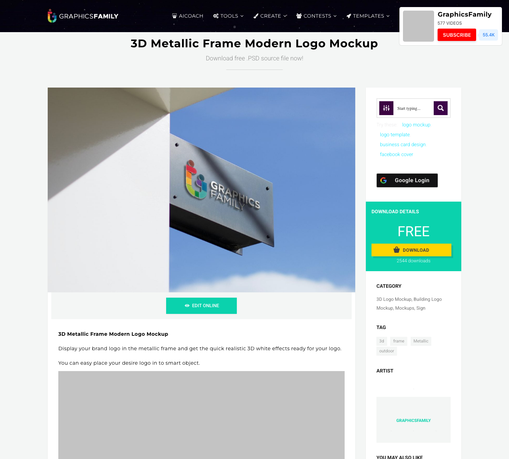
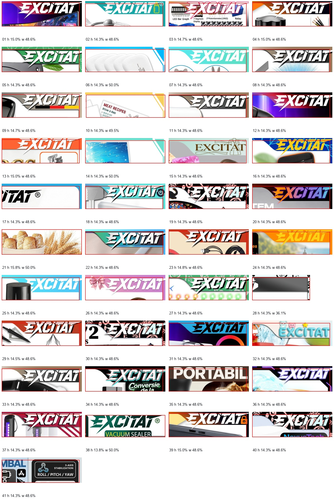
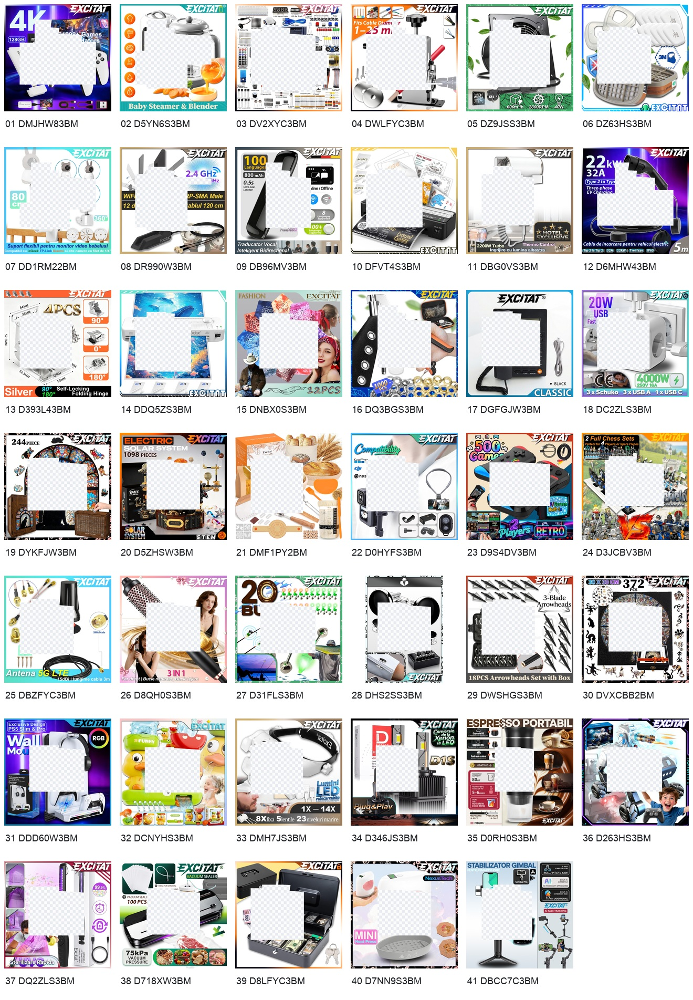
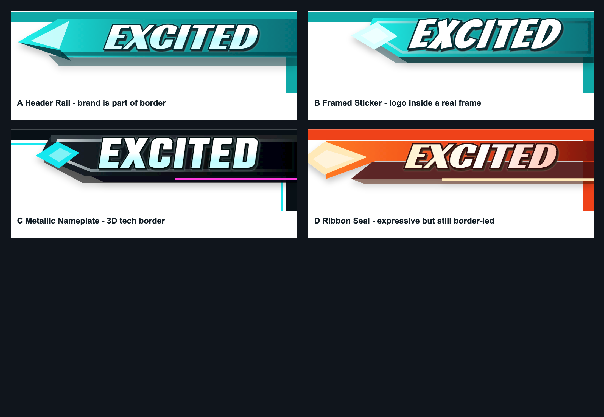

Reference board narrowed to brand-bearing frames, logo containers, corner badges, nameplates, and non-destructive product-image overlays. These are research screenshots only; our generated frame uses original SVG modules.





